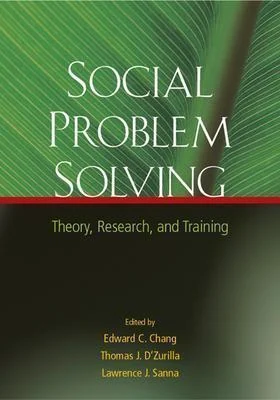
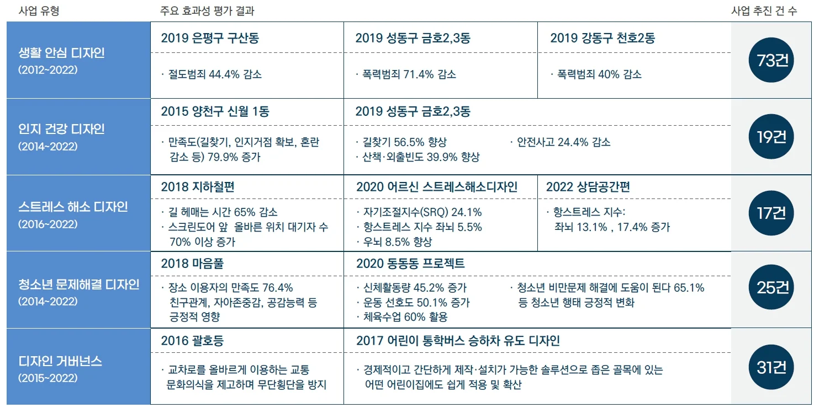
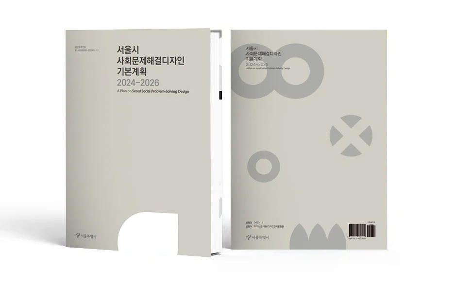
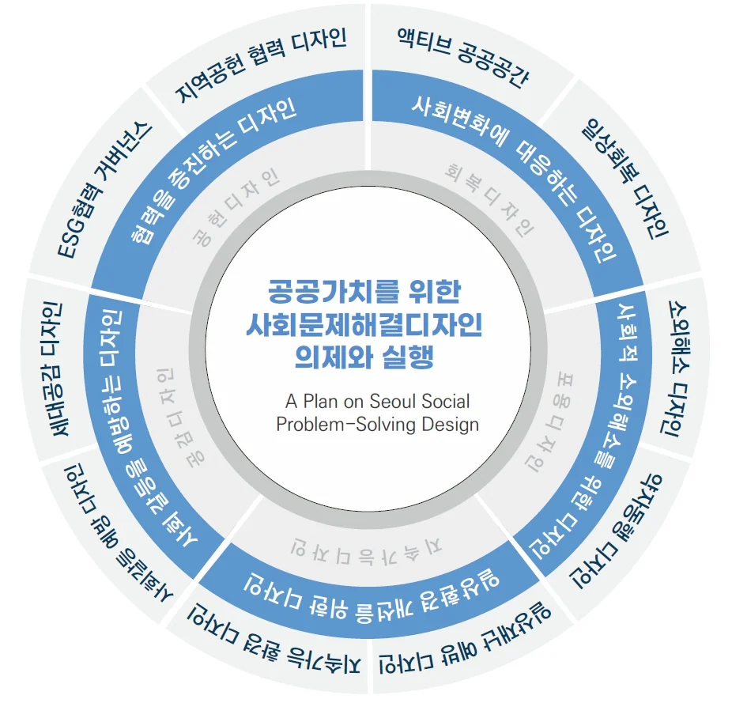

사회문제해결디자인 다시 보기
“사회문제해결 개념의 출현”
그림 1 Social Problem Solving: Theory, Research, and Training by Dr Edward C Chang

” 사회 문제 해결(social problem-solving)은 구체적으로, 문제가 있다고 여겨지는 일상적인 상황에 적응적으로 대처하는 방법을 찾기 위해 노력하는 인지 행동적 과정을 말한다. 이 과정은 자기 주도적이고, 의식적이며, 노력적이고, 명료하며, 집중하는 과정이다. ”
- Thomas J. D’Zurilla (1998)
“ 사회 문제 해결의 과정은 해결책을 찾기 위해 사용하는 기술과 기법을 의미하며, 이러한 기술을 적용하여 가능한 최상의 해결책을 찾는 것을 말한다. 이러한 변형에서 사회 문제 해결은 일반적인 방향 채택, 문제 정의, 해결책을 위한 브레인스토밍, 의사 결정 및 후속 단계를 포함하는 다단계 과정으로 간주된다.”
- Liberman, R.P. (1986).
사회 문제 해결(social problem-solving)은 이미 이론적 연구로 정립이 되어 있는데 사회문제해결의 특징을 일상적 상황에 대처하고 대응하는 기술, 기법과 그 과정적 전체를 아우르는 전략적 수단의 개념으로 정의내리고 있다.
Goldstein F. C.(1987)의 연구에 따르면 문제 해결(problem solving)은 문제에 대한 해결책을 찾기 위한 질서 정연한 방법으로 포괄적이고 즉각적인 방식을 사용하는 것을 말한다. 그 해결 과정은 문제를 탐색하고 구체화하는 발견(discover)하고 단순화(simplify)단계로부터 시작하여 다음 단계에서는 가능한 해결책을 구상(generate)하고 평가(evaluate)하는 단계 그리고 다음 단계에서는 해결책을 실행(implement)하고 해결책이 될 수 있는지 실제로 증명(verify)하는 단계로 이루어져 있다고 보고 있다.
이처럼 사회문제해결(social problem-solving)의 개념은 갑자기 등장한 조어가 아니라 지속적인 필요에 의해 연구되어 왔다. RISS의 자료에 따르면 현재 국내에서도 사회문제해결 주제 관련 학위논문이 58,000편에 이르며 학회 연구 논문 또한 3,000여 편에 다다른다.
“사회문제해결을 위한 다양한 접근”
사회 문제 해결(social problem-solving)은 임상적, 기술적 관점에서 사회를 위하여 응용되어 적용되어 확장되고 있는데 한국과학기술기획평가원(KISTEP)에 따르면, 일반 시민 89%와 전문가 75%는 사회문제 해결에서 과학기술의 역할을 중요하게 생각하고 있다는 조사를 발표하기도 있다. 이러한 추세에 맞춰 과학기술정보통신부는 기후변화, 고령화 같은 사회문제는 해결되지 않고 사회 양극화는 심화되고 있음을 성찰하면서 사회통합과 생태계 보호에 기여하는 혁신의 필요성을 논의하며 ‘사회문제 해결형 연구개발사업’을 진행하고 있으며 과학기술법 제16조6에 따른 제3차 과학기술기반 사회문제해결 종합계획(‘23~’27)을 추진 증에 있다
또한, 행정안전부에서는 사회문제해결 주제로 국민공모전도 추진하고 있는데 ‘도전 한국 2023 국민 아이디어 공모전’에서는 “ 내 아이디어로 우리 주변의 사회문제를 해결할 수 있다.”는 주제로 진행하기도 하였다.
공공디자인을 전담하고 있는 문화체육관광부에서도 디자인을 통한 사회문제 해결에 대해 강조한 바 있는데 2023년 5월 발표된 K-디자인 비전 선언 중에 “고령화, 환경, 스마트기술 등 사회변화에 디자인으로 대응합니다”라는 주제문을 통해 국민안전, 고령화, 지역 소멸 등 당면한 도전과 스마트기술 등 사회변화에 대응하는 공공디자인 개발 지원. 그리고 이를 위해 국민의 아이디어를 모으고 정부와 지자체가 협력해 해결하는 디자인 거버넌스(민관협력) 체계를 구축하는 것을 발표하였다.
“세계 최초의 사회문제해결디자인 제도”
사회문제해결디자인 조례 제3조(적용범위) 사회문제해결디자인의 적용범위
1. 고령화, 저출생, 다문화가족 등 인구구조 변화에 대응하는 디자인
2. 성별, 인종, 장애유무 등 사회적 차별 해소를 위한 디자인
3. 범죄, 재난, 사고 등으로부터 안전과 심리적 안심을 제공하는 디자인
4. 소외, 고립, 스트레스 등으로부터 건강과 정서적 안정감을 증진하는 디자인
5. 공중위생, 층간소음 등 생활환경의 질적 개선을 위한 디자인
6. 공공행정의 편의와 서비스 향상을 위한 디자인
7. 사회복지 제도와 시스템 등을 보완하기 위한 디자인
사회문제해결의 관점은 우리나라에서 공공디자인의 개념과 접합되면서 세계 최초의 사회문제해결디자인을 위한 제도를 마련하게 되었다. 서울시는 사회문제해결디자인 조례를 제정하여 정책적으로 사회문제해결디자인 기본계획을 수립하여 실행해오고 있다. 사회문제해결디자인 사업은 2012년 생활안심디자인사업을 시작으로 2014년 인지건강디자인과 청소년문제해결디자인사업, 2015년 디자인거버넌스, 2016년 스트레스프리디자인사업으로 확장 추진되었으며, 국내 대표적인 공공디자인 특화사업으로 주목받으며 다른 지자체 및 타 기관으로 확산하는 등 저변을 확장해왔다.
그림 2 서울시 사회문제해결디자인 성과

* 서울시가 디자인으로 사회문제를 해결하기 위해 범죄발생률이 높은 지역에 디자인을 입혀 환경을 개선하고, 절도나 강도 같은 범죄를 사전에 예방하는 ‘생활안심디자인’은 올해 성동구 금호동에 추가로 조성됨에 따라 서울시내 총 60곳으로 늘어났다. (에너지경제신문 2019.07.17.)
*서울시의 사회문제 해결 디자인 사업의 효과가 입증되고 시민들의 사회적 지지와 관심을 받으면서 디자인 정책의 한 축으로 그 중요성이 증대됐을 뿐 아니라, 물질 중심의 디자인에서 인간중심의 디자인으로 디자인 정책의 패러다임의 전환을 가져왔다. (머니투데이 2017.08.03.)
그림 3 서울시 사회문제해결디자인 기본계획 2024~2026

사회문제해결디자인은 시의성 있는 다양한 사회문제에 대해 디자인을 통해 시민과 협력하여 효율적인 해결 방법을 제시함으로써 시민 삶의 질 향상을 목적으로 하고 있다. 또한 사회문제해결디자인 실현을 위해 사회문제해결디자인 기본계획 수립을 통해 ‘디자인으로 공공가치를 구현하는 시민 중심 디자인 도시’라는 비전을 중심으로 목표와 전략, 실행방안을 제시하였으며 쉽고 명확한 사업 가이드 제공을 통해 확산성을 높이고 있다.
이러한 사회문제해결디자인을 통해 급변하는 현대 사회에서 발생하는 각종 문제와 이슈에 선제적으로 대응하고 시민의 일상과 사회에 긍정적인 변화를 이끌어 시민중심 디자인
도시를 만들어 나가는 것을 기본계획의 목표로 하고 있다.
사회문제해결 디자인의 계획은 디자인서울 2.0의 비전을 지원하며 시민 체감형 사회적 이슈와 사회적 갈등 요소에 선제적으로 대응하는 창의 디자인 모델 마련하고 있다. 또한 거버넌스를 기반으로 공동 협력을 통한 서울형 디자인 개발 및 문제 해결형 디자인 확산을 통해 시민의 일상을 배려하는 디자인 정책의 기초를 마련하고 있다.
사회갈등예방, 사회가치를 포괄하는 일상생활의 생활밀착형 공공문제해결 디자인의 주제들을 담고 있으며 서울 공공공간과 공공일상에 있어서 사회문제의 신규 발굴 재정의와 문제 해결 검증 디자인 전략과 방안 마련하고 있다.
사회문제해결 디자인 계획의 세부전략 도출의 과정에서는 다음과 같은 기준을 중요시하여 사회변화에 대응하는 디자인, 사회적 소외해소를 위한 디자인, 일상환경 개선을 위한 디자인, 사회갈등을 예방하는 디자인, 협력을 증진하는 디자인의 5가지 세부 전략하에
액티브 공공공간, 일상회복 디자인, 소외해소 디자인, 약자동행 디자인, 일상재난 예방 디자인, 지속가능 환경 디자인, 사회갈등 예방 디자인, 세대공감 디자인, ESG협력 거버넌스, 지역공헌 협력 디자인의 10가지 세부 방안으로 구성되었다.
• 공공가치를 위한 사회문제해결디자인 의제 실현을 위하여 실행방안별 추진사업을 선정하고 추진과제를 제시
• 서울시를 비롯한 국내외 사회문제해결디자인 관련 동향을 파악하여 선도성 및 확산성 있는 의제 반영
• 디자인서울 2.0 정책과의 연계성, 시민 체감도, 문제해결의 중요도, 디자인적 실현
가능성 있는 의제 반영
• 지속적, 특정 시기적으로 나타나는 사회문제 이슈에 효과적 대응이 가능한 시의성 있는 의제 반영
그림 4 서울시 사회문제해결디자인 추진전략에 따른 실행방안

“사회문제해결디자인의 발전을 위한 제언”
우리나라만의 특화된 디자인 모델로 발전하고 있는 사회문제해결디자인의 확장과 발전을 위해서 함께 고민해볼 내용을 공유해보고자 한다.
1. 참여 대상을 사회문제해결의 주제에 맞게 다각화.
사회문제의 양상은 매우 다양하고 복잡하다 일반론적 관점의 ‘시민참여’에서 이제는 구체화된 참여 대상의 세분화와 거버넌스의 유형이 필요하다. 이를 통해 사회문제해결디자인이 단순 참여 모델이 아닌 네트워크 거버넌스와 협력적 거버넌스의 실질적 모델로서의 역할이 가능할 수 있다.
2. 사회문제해결디자인 주제의 체계화 필요
사회문제의 종류는 너무 광범위하기 때문에 모든 것을 담아서 디자인의 방안을 마련하는 것은 불가능하다. 오히려 지금 우리 현시점에서의 사회문제를 분석하고 다양한 관점에서 살펴보고 가중치를 두어 실질적 실현성을 위해서 사회문제해결디자인의 대주제를 5개 이하로 소량화 명료화하여 이해도를 높일 필요가 있다. 또한, 사회문제 대주제 밑에 세부적인 방안을 다양화하는 것으로 기존 다양한 사회문제를 포용하도록 할 필요가 있다.
3. 사회문제해결디자인만의 특징을 강화
사회문제 ‘해결’이라는 개념이 적용된 국내 유일의 특화 디자인의 해석에 맞추어 기존 디자인 체계에서 갖추지 않은 ‘실증’ ‘검증’을 통해 해결 여부를 판단할 수 있는 디자인 체계의 마련을 제언하고자 한다. 이는 공공디자인 사업의 마지막 단계인 ‘관리’ 단계의 구체적 방안으로 연계가 가능할 뿐 아니라 디자인의 가치 평가에서도 정량화 할 수 있는 방법이기도 하다.
4. 과정과 전략으로서의 디자인 특성 강화
사회문제해결이라는 주제 특성상 문제의 해결은 물리적인 결과보다 이해관계자의 과정적 참여 속에서 이해를 통해 상대적으로 이루어지는 것이 중요하다. 구체화된 디자인 방법론을 유형화하여 사회문제해결디자인에 맞는 디자인 방법론과 프로세스의 구체화에 관한 내용이 기본계획에 연구 되어야 한다. 따라서 전략적 디자인의 가치와 효과성을 통해 우리나라 도시 공공디자인의 성장을 기대할 수 있다.
5. 사회문제해결디자인 프로세스 솔루션의 구조 강화
도시 디자인 사업의 기획-조사-분석-설계-관리 등의 실질적 사업 전주기 프로세스에 맞는 요소들을 제시하는 솔루션의 구조 개선으로 행정 및 민간에서의 사용에 실질적 적용이 용이하도록 사회문제해결디자인의 구조를 발전시킬 필요가 있다. 사회문제해결디자인의 사업은 어떤 특정 분야 하나로만은 해결하기 어렵기 때문에 전주기에 해당하는 과정을 구조화해서 담아내는 사업 모델 솔루션으로 발전해야 한다.
사회문제해결이라는 목표와 디자인이라는 전략의 결합을 통해 시민 체감형 사회적 이슈와 사회적 갈등 요소에 선제적으로 대응하는 창의 디자인 모델을 마련하고 과정의 공유를 통한 공동 협력 기반의 문제 해결형 디자인 확산을 통해 시민의 일상을 배려하는 디자인 정책이 사회문제해결디자인으로 마련될 수 있다고 생각한다.
사회문제해결디자인이 사회갈등예방, 사회가치를 포괄하는 일상생활의 생활밀착형 공공문제해결을 위한 디자인, 공공공간과 공공일상에 있어서 사회문제의 신규 발굴 재정의와 문제 해결 검증 전략으로써 그리고 지자체. 공공영역에 나타나는 다양한 사회적 현상에 대해 탄력적 실시간으로 대응, 변해갈 수 있는 우리 일상 속에 꼭 필요한 디자인으로 인식되고 함께 하길 바란다.
[참고문헌]
D'Zurilla, T.J.; Change, E.C.; Nottingham, E.J.; Faccini, L. (1998). "Social problem-solving deficits and hopelessness, depression, and suicidal risk in college students and psychiatric inpatients". Journal of Clinical Psychology.
Liberman, R.P.; Mueser, K.T.; Wallace, C.J.; Jacobs, H.E.; Eckman, T.; Massel, H.K. (1986). "Training skills in the psychiatrically disabled: Learning coping and competence“
Bellack, A.S.; Sayers, M.; Mueser, K.T.; Bennett, M. (1994). "Evaluation of social problem solving in schizophrenia". Journal of Abnormal Psychology.
Goldstein F. C., & Levin H. S. (1987). Disorders of reasoning and problem-solving ability. In M. Meier, A. Benton, & L. Diller (Eds.), Neuropsychological rehabilitation.